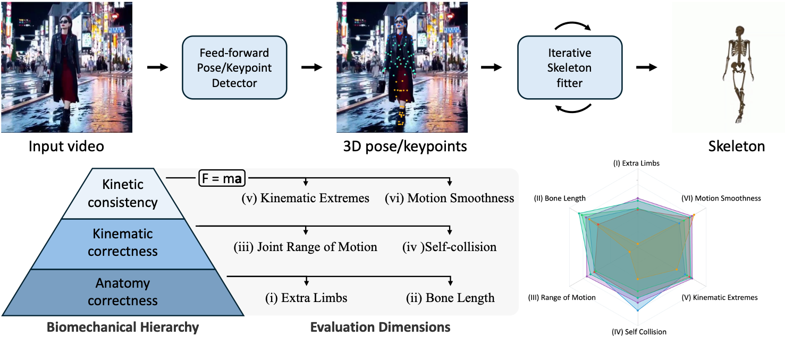
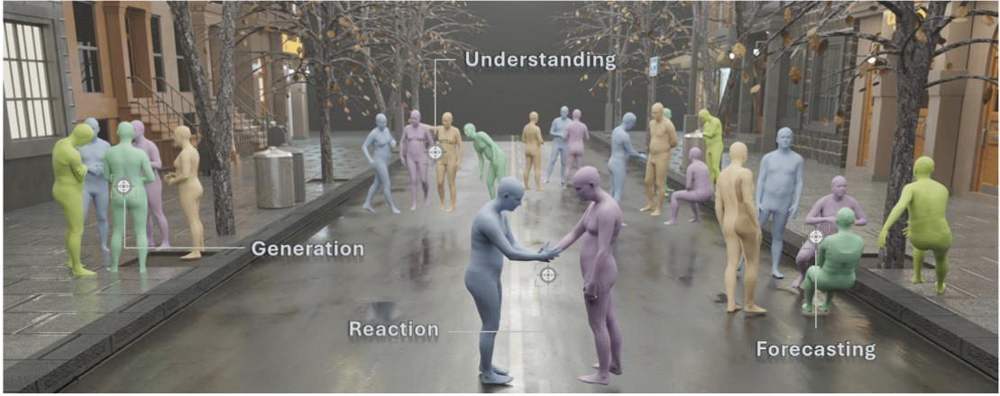
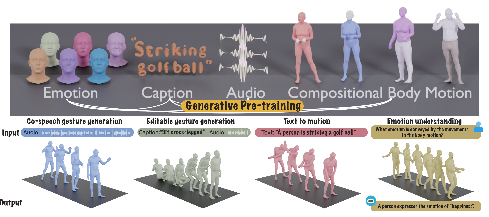

Under Review · 2026HumanScore: Benchmarking Human Motions in Generated Videos
Under review
I am a Ph.D. student in Robotics at Carnegie Mellon University. I received my B.S. in Electrical Engineering and Computer Science from Peking University in July 2026.
I am currently a research intern at the Beijing Institute for General Artificial Intelligence (BIGAI), working with Dr. Siyuan Huang. Previously, I worked with Prof. Ehsan Adeli at the Stanford Vision & Learning Lab, and with Prof. Lingjie Liu and Prof. Kostas Daniilidis at the Penn GRASP Laboratory.

Under Review · 2026Under review

3DV · 2026
CVPR · 2025* Equal contribution. See the complete list on Google Scholar.
Beijing, China
Research Intern with Dr. Siyuan Huang Humanoid retargeting
Philadelphia, Pennsylvania, USA
Research Intern with Prof. Lingjie Liu and Prof. Kostas Daniilidis Egocentric human–object interaction reconstruction
Stanford, California, USA
Research Intern with Prof. Ehsan Adeli Human motion modeling and generation